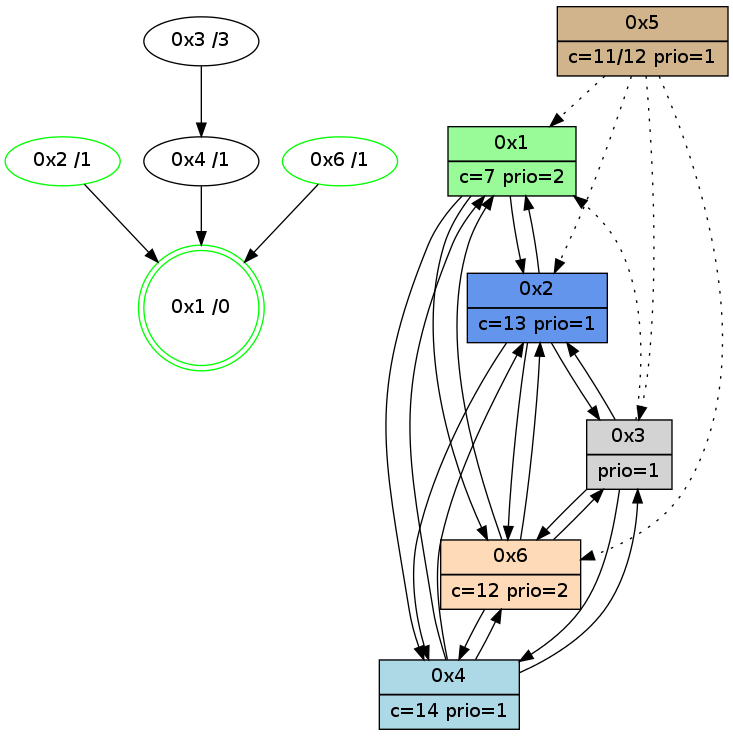

>> << IDX [start] -100 -25 -5 +0 +5 +25 +100 [970.09486413]
 Previous packets
----------------------------------------------------------------------
965.173785 beacon01(adaf) #0 coord=01,02,05,03,04,06 cycle=432.0ms assoc
-- color-indic=1 64 c4 91
965.183745 beacon02(adaf) #0 coord=01,02,05,03,04,06 cycle=432.0ms assoc 64 95 6e
965.193747 beacon05(adaf) #0 coord=01,02,05,03,04,06 cycle=432.0ms assoc 64 33 44
965.203746 beacon03(adaf) #0 coord=01,02,05,03,04,06 cycle=432.0ms assoc 64 af 60
965.213746 beacon04(adaf) #0 coord=01,02,05,03,04,06 cycle=432.0ms assoc 64 09 4a
965.223747 beacon06(adaf) #0 coord=01,02,05,03,04,06 cycle=432.0ms assoc 64 7d 56
965.235532 [Hello(4): seq=771 sym=2,1,6 asym=3 sysInfo=hasWarning stat=2:14,8,6,0/1:11,14,14,0/6:11,6,5,1/3:2,5,2,0]
965.238159 [Color(2) seq=158 @0:0 color=13 prio=1 c=7,c,e;1,4,6,8,9,b]
965.239404 [Color(5) seq=104 @0:0 color=11/12 prio=1 c=8,d;4,7,9,c,e]
965.241752 [Color(1) seq=197 @0:0 color=7 prio=2 c=1,4,6,8,9,b,c,d;0,2,3,5,a]
----------------------------------------------------------------------
965.665892 beacon01(adaf) #0 coord=01,02,05,03,04,06 cycle=432.0ms assoc
-- color-indic=1 64 88 21
965.675853 beacon02(adaf) #0 coord=01,02,05,03,04,06 cycle=432.0ms assoc 64 d9 de
965.685854 beacon05(adaf) #0 coord=01,02,05,03,04,06 cycle=432.0ms assoc 64 7f f4
965.695855 beacon03(adaf) #0 coord=01,02,05,03,04,06 cycle=432.0ms assoc 64 e3 d0
965.705855 beacon04(adaf) #0 coord=01,02,05,03,04,06 cycle=432.0ms assoc 64 45 fa
965.715854 beacon06(adaf) #0 coord=01,02,05,03,04,06 cycle=432.0ms assoc 64 31 e6
965.726711 [Hello(1): seq=671 sym=2,6 sysInfo=hasWarning,coloring-mode-on,ColoringModeRequestCalled stat=2:9,13,1,2/6:7,12,4,1]
965.729109 [Color(4) seq=126 @0:0 color=14 prio=1 c=7,c;1,4,6,8,9,b,d]
965.731264 [Hello(2): seq=1260 sym=3,6,1,4 sysInfo=hasWarning stat=3:0,11,5,1/6:14,8,5,0/1:10,3,8,0/4:1,3,1,0]
965.734046 [Color(6) seq=156 @0:0 color=12 prio=2 c=7,d,e;1,4,6,8,9,b]
----------------------------------------------------------------------
966.158000 beacon01(adaf) #0 coord=01,02,05,03,04,06 cycle=432.0ms assoc
-- color-indic=1 64 4c 4e
966.167960 beacon02(adaf) #0 coord=01,02,05,03,04,06 cycle=432.0ms assoc 64 1d b1
966.177961 beacon05(adaf) #0 coord=01,02,05,03,04,06 cycle=432.0ms assoc 64 bb 9b
966.187963 beacon03(adaf) #0 coord=01,02,05,03,04,06 cycle=432.0ms assoc 64 27 bf
966.197962 beacon04(adaf) #0 coord=01,02,05,03,04,06 cycle=432.0ms assoc 64 81 95
966.207962 beacon06(adaf) #0 coord=01,02,05,03,04,06 cycle=432.0ms assoc 64 f5 89
966.219742 [Hello(4): seq=772 sym=2,6 asym=1,3 sysInfo=hasWarning stat=2:15,9,6,0/6:11,7,5,1/1:12,15,14,0/3:2,5,2,0]
966.224362 [Color(2) seq=159 @0:0 color=13 prio=1 c=7,c,e;1,4,6,8,9,b]
966.228051 [STC(1) #0.133 new-neigh,tree-change,inconsistent-stability,stable,to-color d=0]
966.229999 [Color(1) seq=198 @0:0 color=7 prio=2 c=1,4,6,8,9,b,c,d;0,2,3,5,a,e]
----------------------------------------------------------------------
966.650108 beacon01(adaf) #0 coord=01,02,05,03,04,06 cycle=432.0ms assoc
-- color-indic=1 64 12 2f
966.660070 beacon02(adaf) #0 coord=01,02,05,03,04,06 cycle=432.0ms assoc 64 43 d0
966.670070 beacon05(adaf) #0 coord=01,02,05,03,04,06 cycle=432.0ms assoc 64 e5 fa
966.680069 beacon03(adaf) #0 coord=01,02,05,03,04,06 cycle=432.0ms assoc 64 79 de
966.690070 beacon04(adaf) #0 coord=01,02,05,03,04,06 cycle=432.0ms assoc 64 df f4
966.700070 beacon06(adaf) #0 coord=01,02,05,03,04,06 cycle=432.0ms assoc 64 ab e8
966.711575 [Hello(1): seq=672 sym=2,4,6 sysInfo=hasWarning,coloring-mode-on,ColoringModeRequestCalled stat=2:10,13,1,2/4:0,0,0,0/6:8,13,4,1]
966.714105 [Color(3) seq=129 @0:0 prio=1 c=7,c,d,e;1,4,6,8,9,b]
966.716140 [Color(4) seq=127 @0:0 color=14 prio=1 c=7,c;1,4,6,8,9,b,d]
966.718997 [STC(6)->1 #0.133 new-neigh,tree-change,inconsistent-stability,stable,to-color d=1]
966.721116 [Hello(2): seq=1261 sym=3,6,1,4 sysInfo=hasWarning stat=3:0,11,5,1/6:14,9,5,0/1:10,4,9,0/4:1,3,1,0]
966.723956 [STC(2)->1 #0.133 new-neigh,tree-change,inconsistent-stability,stable,to-color d=1]
966.730838 [Color(6) seq=157 @0:0 color=12 prio=2 c=7,d,e;1,4,6,8,9,b]
----------------------------------------------------------------------
967.142217 beacon01(adaf) #0 coord=01,02,05,03,04,06 cycle=432.0ms assoc
-- color-indic=1 64 d6 40
967.152178 beacon02(adaf) #0 coord=01,02,05,03,04,06 cycle=432.0ms assoc 64 87 bf
967.162179 beacon05(adaf) #0 coord=01,02,05,03,04,06 cycle=432.0ms assoc 64 21 95
967.172179 beacon03(adaf) #0 coord=01,02,05,03,04,06 cycle=432.0ms assoc 64 bd b1
967.182181 beacon04(adaf) #0 coord=01,02,05,03,04,06 cycle=432.0ms assoc 64 1b 9b
967.192179 beacon06(adaf) #0 coord=01,02,05,03,04,06 cycle=432.0ms assoc 64 6f 87
967.203871 [Hello(3): seq=771 sym=4,2 asym=1 sysInfo=hasWarning stat=4:0,3,1,0/2:13,6,8,0/1:7,6,10,1]
967.206472 [Color(2) seq=160 @0:0 color=13 prio=1 c=7,c,e;1,4,6,8,9,b]
967.209518 [Hello(4): seq=773 sym=2,6 asym=1,3 sysInfo=hasWarning stat=2:0,9,7,0/6:11,8,6,1/1:12,0,15,0/3:2,5,2,0]
967.212733 [STC(4)->6-.->1 #0.133 to-color d=2]
967.218441 [Color(1) seq=199 @0:0 color=7 prio=2 c=1,4,6,8,9,b,c,d;0,2,3,5,a,e]
----------------------------------------------------------------------
967.634324 beacon01(adaf) #0 coord=01,02,05,03,04,06 cycle=432.0ms assoc
-- color-indic=1 64 9a f0
967.644287 beacon02(adaf) #0 coord=01,02,05,03,04,06 cycle=432.0ms assoc 64 cb 0f
967.654286 beacon05(adaf) #0 coord=01,02,05,03,04,06 cycle=432.0ms assoc 64 6d 25
967.664286 beacon03(adaf) #0 coord=01,02,05,03,04,06 cycle=432.0ms assoc 64 f1 01
967.674286 beacon04(adaf) #0 coord=01,02,05,03,04,06 cycle=432.0ms assoc 64 57 2b
967.684286 beacon06(adaf) #0 coord=01,02,05,03,04,06 cycle=432.0ms assoc 64 23 37
967.695849 [STC(3)->4-.->1 #0.133 to-color d=3]
967.697942 [Hello(6): seq=686 sym=4,2,1,3 sysInfo=hasWarning stat=4:4,10,3,0/2:9,5,13,1/1:0,4,14,1/3:2,3,4,4]
967.701070 [TreeStatus(6)-.->1 #0.133 new-neigh,tree-change,inconsistent-stability,stable child=1]
967.704185 [Color(6) seq=158 @0:0 color=12 prio=2 c=7,d,e;1,4,6,8,9,b]
967.708993 [Hello(1): seq=673 sym=2,4,6 sysInfo=hasWarning,coloring-mode-on,ColoringModeRequestCalled stat=2:11,13,2,2/4:0,1,0,0/6:9,14,5,1]
967.710992 [Hello(2): seq=1262 sym=3,6,1,4 sysInfo=hasWarning stat=3:1,11,5,1/6:14,10,5,0/1:10,5,9,0/4:1,3,2,0]
----------------------------------------------------------------------
968.126432 beacon01(adaf) #0 coord=01,02,05,03,04,06 cycle=432.0ms assoc
-- color-indic=1 64 5e 9f
968.136394 beacon02(adaf) #0 coord=01,02,05,03,04,06 cycle=432.0ms assoc 64 0f 60
968.146393 beacon05(adaf) #0 coord=01,02,05,03,04,06 cycle=432.0ms assoc 64 a9 4a
968.156394 beacon03(adaf) #0 coord=01,02,05,03,04,06 cycle=432.0ms assoc 64 35 6e
968.166394 beacon04(adaf) #0 coord=01,02,05,03,04,06 cycle=432.0ms assoc 64 93 44
968.176394 beacon06(adaf) #0 coord=01,02,05,03,04,06 cycle=432.0ms assoc 64 e7 58
968.188085 [Hello(4): seq=774 sym=2,1,6 sysInfo=hasWarning stat=2:1,9,7,0/1:13,1,15,0/6:12,9,6,2]
968.190614 [Color(2) seq=161 @0:0 color=13 prio=1 c=7,c,e;1,4,6,8,9,b]
968.192014 [Hello(3): seq=772 sym=6,4,2 asym=1 sysInfo=hasWarning stat=6:0,1,0,1/4:0,3,2,0/2:14,7,8,0/1:8,7,10,1]
968.195878 [TreeStatus(3)-.->1 #0.133 new-neigh,tree-change,inconsistent-stability child=1]
----------------------------------------------------------------------
968.618539 beacon01(adaf) #0 coord=01,02,05,03,04,06 cycle=432.0ms assoc
-- color-indic=1 64 13 98
968.628501 beacon02(adaf) #0 coord=01,02,05,03,04,06 cycle=432.0ms assoc 64 42 67
968.638500 beacon05(adaf) #0 coord=01,02,05,03,04,06 cycle=432.0ms assoc 64 e4 4d
968.648501 beacon03(adaf) #0 coord=01,02,05,03,04,06 cycle=432.0ms assoc 64 78 69
968.658500 beacon04(adaf) #0 coord=01,02,05,03,04,06 cycle=432.0ms assoc 64 de 43
968.668501 beacon06(adaf) #0 coord=01,02,05,03,04,06 cycle=432.0ms assoc 64 aa 5f
968.680260 [Hello(2): seq=1263 sym=3,6,1,4 sysInfo=hasWarning stat=3:2,11,5,2/6:14,10,5,0/1:10,5,9,0/4:2,3,2,0]
968.682940 [Hello(6): seq=687 sym=4,2,1,3 sysInfo=hasWarning stat=4:5,10,3,0/2:10,6,13,1/1:1,4,14,1/3:3,3,5,5]
968.686097 [Color(6) seq=159 @0:0 color=12 prio=2 c=7,d,e;1,4,6,8,9,b]
968.687942 [Hello(1): seq=674 sym=2,4,6 sysInfo=hasWarning,coloring-mode-on,ColoringModeRequestCalled stat=2:12,13,2,2/4:0,1,0,0/6:9,14,5,1]
968.691591 [STC(1) #0.134 new-neigh,tree-change,inconsistent-stability,stable,to-color d=0]
----------------------------------------------------------------------
969.110648 beacon01(adaf) #0 coord=01,02,05,03,04,06 cycle=432.0ms assoc
-- color-indic=1 64 d7 f7
969.120609 beacon02(adaf) #0 coord=01,02,05,03,04,06 cycle=432.0ms assoc 64 86 08
969.130609 beacon05(adaf) #0 coord=01,02,05,03,04,06 cycle=432.0ms assoc 64 20 22
969.140609 beacon03(adaf) #0 coord=01,02,05,03,04,06 cycle=432.0ms assoc 64 bc 06
969.150609 beacon04(adaf) #0 coord=01,02,05,03,04,06 cycle=432.0ms assoc 64 1a 2c
969.160610 beacon06(adaf) #0 coord=01,02,05,03,04,06 cycle=432.0ms assoc 64 6e 30
969.172224 [STC(6)->1 #0.134 new-neigh,tree-change,inconsistent-stability,stable,to-color d=1]
969.174324 [STC(2)->1 #0.134 new-neigh,tree-change,inconsistent-stability,stable,to-color d=1]
969.175981 [Hello(3): seq=773 sym=6,4,2 asym=1 sysInfo=hasWarning stat=6:1,2,0,1/4:0,3,2,0/2:15,7,8,0/1:9,7,11,1]
969.177813 [Color(1) seq=201 @0:0 color=7 prio=2 c=1,4,6,8,9,b,c,d;0,2,3,5,a,e]
969.181570 [Hello(4): seq=775 sym=2,1,6,3 sysInfo=hasWarning stat=2:2,10,7,0/1:14,1,0,0/6:13,10,6,2/3:0,0,0,1]
969.184410 [STC(4)->1 #0.134 to-color d=1]
969.188213 [TreeStatus(2)-.->1 #0.134 new-neigh,tree-change,inconsistent-stability,stable child=1]
969.190370 [Color(2) seq=162 @0:0 color=13 prio=1 c=7,c,e;1,4,6,8,9,b]
----------------------------------------------------------------------
969.602755 beacon01(adaf) #0 coord=01,02,05,03,04,06 cycle=432.0ms assoc
-- color-indic=1 64 9b 47
969.612717 beacon02(adaf) #0 coord=01,02,05,03,04,06 cycle=432.0ms assoc 64 ca b8
969.622718 beacon05(adaf) #0 coord=01,02,05,03,04,06 cycle=432.0ms assoc 64 6c 92
969.632717 beacon03(adaf) #0 coord=01,02,05,03,04,06 cycle=432.0ms assoc 64 f0 b6
969.642717 beacon04(adaf) #0 coord=01,02,05,03,04,06 cycle=432.0ms assoc 64 56 9c
969.652717 beacon06(adaf) #0 coord=01,02,05,03,04,06 cycle=432.0ms assoc 64 22 80
969.664258 [TreeStatus(4)-.->1 #0.134 new-neigh,tree-change,inconsistent-stability child=1]
969.665485 [Hello(1): seq=675 sym=2,4,6 sysInfo=hasWarning,coloring-mode-on,ColoringModeRequestCalled stat=2:12,14,2,3/4:1,1,1,0/6:9,14,5,1]
969.671378 [TreeStatus(3)-.->1 #0.134 new-neigh,tree-change,inconsistent-stability child=1]
969.675250 [Hello(6): seq=688 sym=4,2,1,3 sysInfo=hasWarning stat=4:6,10,4,0/2:11,7,14,2/1:2,5,15,1/3:4,3,5,5]
969.678076 [Color(6) seq=160 @0:0 color=12 prio=2 c=7,d,e;1,4,6,8,9,b]